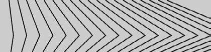

Ce premier TP sur processing était orienté sur les boucles. Nous devions créer des motifs répétifs entirement crées par des boucles. Cela a permis de mettre en avant l'utilisation des différents formats de boucles que l'on retrouve sur Processing dont le while et surtout le for, mais aussi la possibilité d'imbriquer des boucles.
Ce tp m'a permis de maitriser à la fois l'utilisation des boucles mais aussi celle des instructions pour dessiner des formes géométriques.
Exemple :
Un des motif à reproduire en utilisant des boucles

Les tableaux
L'objetif de ce Tp est la maitrise des tableaux en Processing. En effet il s'agit d'un élément très important en programmation car il permet une flexibilité dans le stockage et traitement des variables. Ainsi nous avons pu effectuer diverses opérations sur des tableaux, comme accéder à certains éléments ou le trier avec des exemples comme un annuaire téléphonque qui combinait différent types de tableaux.
Nous avons pu également nous familiariser avec les tableaux à plusieurs dimensions, qui sont extrèmement utiles, avec la programmation d'un système de création de groupes d'élèves.
Grâce à ce TP j'ai pu apprendre à maitriser les tableaux et les manipuler, ce qui est quelque chose que je n'avais jamais fait et que je me retrouve à utiliser très souvent maintenant.
Exemple :
obtenir le groupe d'un élève
String [][] groupe = {{"Jérôme", "Valérian"}
, {"Nathan", "Maëlis"}
, {"Clémence", "Nicolas", "Louis"}
, {"Jules", "Nicolas"}
, {"Anaelle", "Mathilde", "Catherine"}
, {"Mathieu"}
, {"Claire", "Vincent"}
, {"Erwan", "Antoine"}
, {"Axel", "Paul"}
, {"François"}};
void setup() {
getGroupe("Nicolas");
}
void draw() {
}
void getGroupe(String name) {
int g[] = {};
for (int i = 0; i < groupe.length; i++) {
for (int j = 0; j < groupe[i].length; j++) {
if (groupe[i][j].equals(name)) {
g = append(g, i);
}
}
}
if (g.length == 0) {
println(name + " n'appartient à aucun groupe");
} else {
println(name + " appartient au(x) groupe(s) : ");
for (int i = 0; i < g.length; i++) {
println(" - groupe " + (g[i]+1));
}
}
}
Le traitement de l'image
Ce dernier TP était centré sur le traitement d'une image : c'est à dire modifier une image en changeant ces couleurs, son contraste, sa luminosité ... Pour cela nous avons d'abord appris à réccupérer les pixels d'une image avec la fonction loadPixels() et de les mofier un par un pour créer différents dégradés. Nous avons ensuite pu appliquer ce procédé à une image de tournesol pour y appliquer différents effets comme par exemple le négatif ou noir et blanc. Ce TP combianit les deux précédents TP puisqu'il necessitait l'utilisation à la fois de boucles et de tableaux (les pixels sont présentés sous la forme d'un tableau à une seule dimension).
Bien que je trouve que la gestion des images ne soit pas très efficace en Processing, il s'agissait d'un TP plus compplexe que les précédents mais qui permet de comprendre le fonctionnement de certains effet que les logiciels de traitement d'image peuvent réaliser.
Exemple :
L'image d'origine, avec un effet négatif et un effet noir et blanc
Annexe
Télécharger le TP Tableaux
/!\Necessite une connexion internet, l'archive est hébergée sur Google Drive/!\
Télécharger le TP Traitement image
/!\Necessite une connexion internet, l'archive est hébergée sur Google Drive/!\